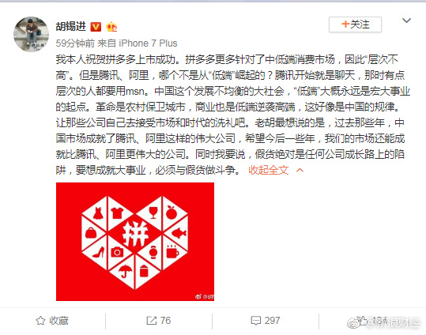

？！！@新浪财经:【@胡锡进 祝贺@拼多多 上市成功:低端大概是宏大事业起点】环球时报总编辑胡锡进发布微博称，祝贺拼多多上市成功。拼多多更多针对了中低端消费市场，因此“层次不高”。同时他认为，腾讯、阿里，哪个不是从“低端”崛起的？中国这个发展不均衡的大社会，“低端”大概永远是宏大事业的起点。胡锡进祝贺拼多多上市成功:低端大概是宏大事业起点
 胡锡进祝贺拼多多上市成功:低端大概是宏大事业起点
胡锡进祝贺拼多多上市成功:低端大概是宏大事业起点